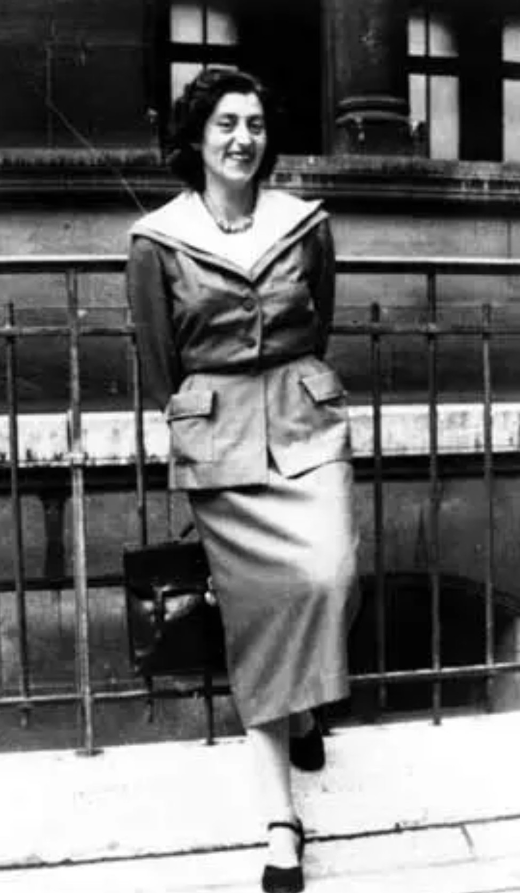

Nom : Lucie Bernard, épouse Aubrac
Dates : 29 juin 1912 – 14 mars 2007
Nationalité : Française
Lucie Aubrac est l’une des grandes figures de la Résistance intérieure française. Membre du mouvement Combat, elle participe à des actions clandestines, organise des évasions et joue un rôle essentiel dans la lutte contre l’occupation allemande. Son courage et sa détermination en font une icône de la Résistance.
Dès 1940, Lucie Aubrac s’engage dans la Résistance avec son mari Raymond. Elle participe à la création du mouvement Libération-Sud, puis Combat. Elle assure des liaisons, transporte des messages, organise des réunions clandestines et contribue à la structuration des réseaux lyonnais.
En 1943, elle joue un rôle décisif dans la libération de son mari, arrêté par la Gestapo lors de l’affaire de Caluire. Sous couvert d’une grossesse avancée, elle met en place un plan audacieux qui permet l’évasion de plusieurs résistants.
Lucie Aubrac incarne la Résistance civile et l’engagement des femmes dans la lutte contre le nazisme. Son action, son courage et son rôle dans l’évasion de résistants en font une figure majeure de l’histoire de la France pendant la Seconde Guerre mondiale. Elle reste un symbole de liberté, de détermination et de lutte contre l’oppression.